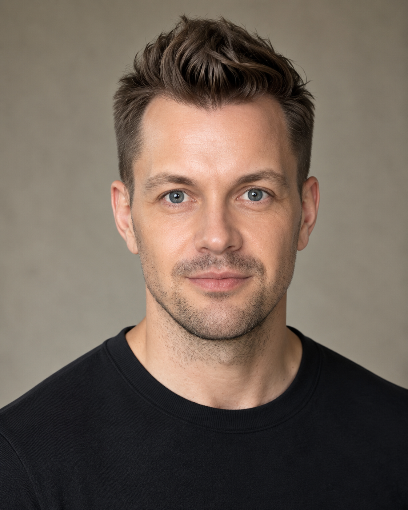

Cloud & AI Advisor at Microsoft
Johan Wallquist
I share practical AI work, talks, workshops, and tools you can reuse. Start with what is useful to you.

Cloud & AI Advisor at Microsoft
I share practical AI work, talks, workshops, and tools you can reuse. Start with what is useful to you.